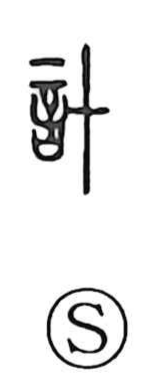

計

Uncategorized
Kun: hakaru, hakarau | On: kei
to count ・ to calculate ・ to plan ・ to think
Explanation
Shirakawa treats 計 as a later compound first noted in the Shuowen; since no oracle-bone or bronze forms are known, its earliest shape cannot be fixed with certainty. From its on-yomi kei he envisions an affinity with 卜, divination, in which one tallies the recorded hits and misses, and with 稽, the act of pondering and comparing. In this light, 計 belongs to the realm of reckoning and deliberation—used for counting, calculating, laying plans, and thinking things through.